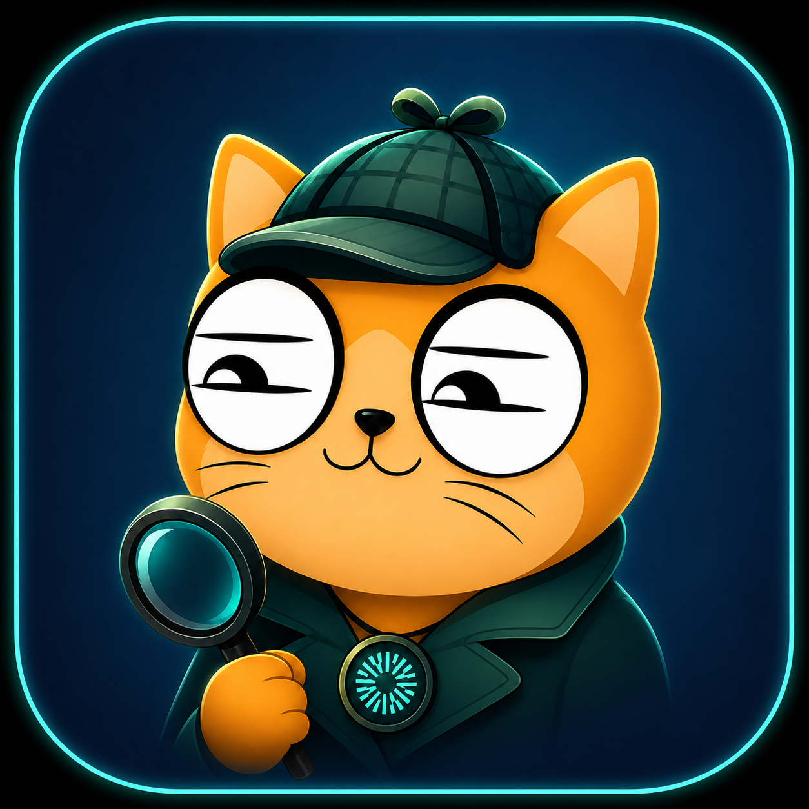

チェーンで裏取りする、Mantle DeFi 調査エージェント。
🟢＝実需の金利が主体／🟡＝配布報酬が大きめ／🔴＝配布報酬が大半。
🔄＝DEX（取引所）。公式サイトは DefiLlama 由来（推測なし）。各プールの提供元リンク付き全一覧はリポジトリの examples/correspondence.md に。
| プール | 年利 | 判定 | TVL | 資産 | チェーン |
|---|
チャットは聞いた銘柄を深掘り、全体調査は全プールを一巡して変化を見ます。
チェーンの裏取りがあることです。
表示する数字は、実際に取得・計算した実データだけ。AI が会話で作った数字は載りません。カードや表には提供元の公式サイトと Mantlescan へのリンクが付いていて、元データを自分で確かめられます。
ダッシュボードに出ていない事実（報酬トークンが実在するか・契約が後から変更できる作りか）を、Mantle チェーンまで見に行って確認します。表の数字の一段奥まで確かめられます。
利回りが「実需の金利」から来ているのか「配布報酬」から来ているのかを、淡々と切り分けて示します。出どころをそのまま伝えるだけで、最後の判断はあなたに委ねます。
鍵を扱わず、取引もしません。「利回りの中身」を見せるだけで、買え・売れは言いません。判断は人間が行います。